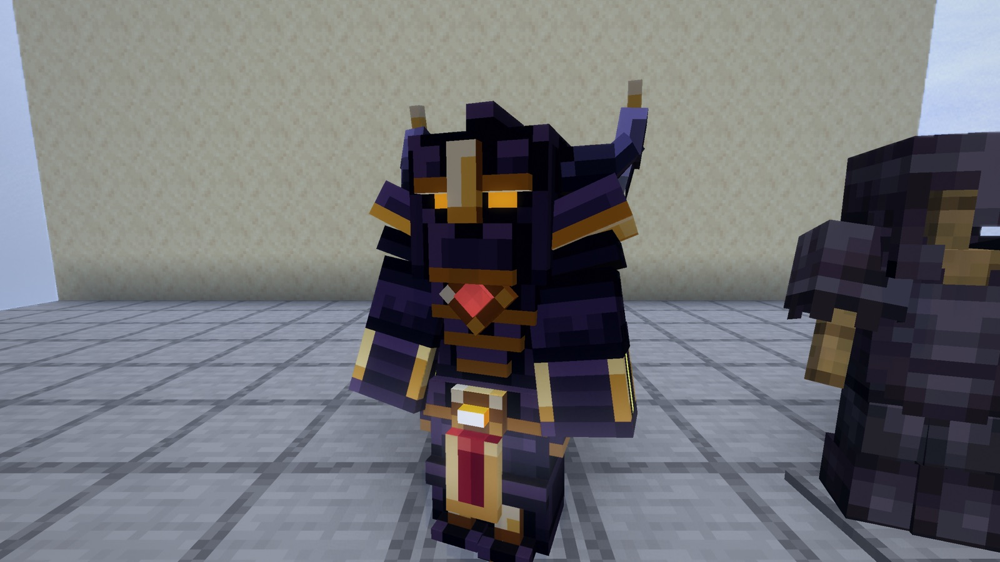
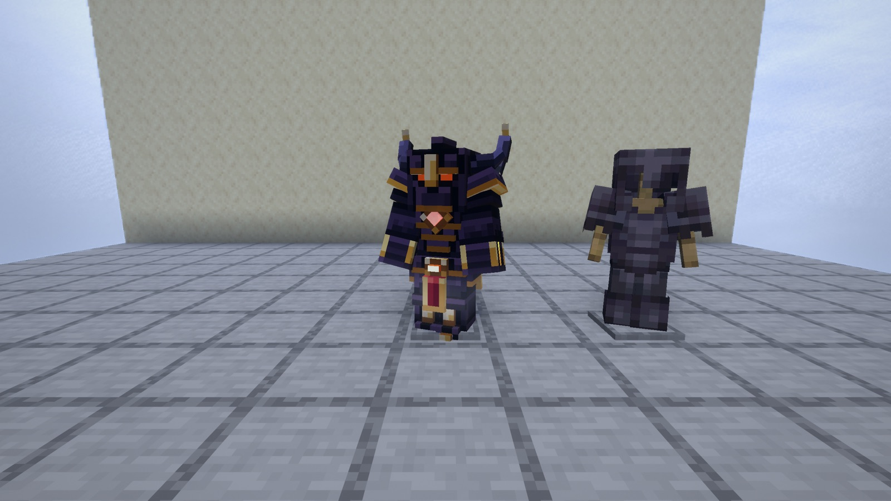
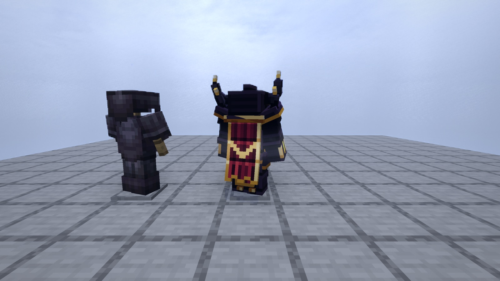
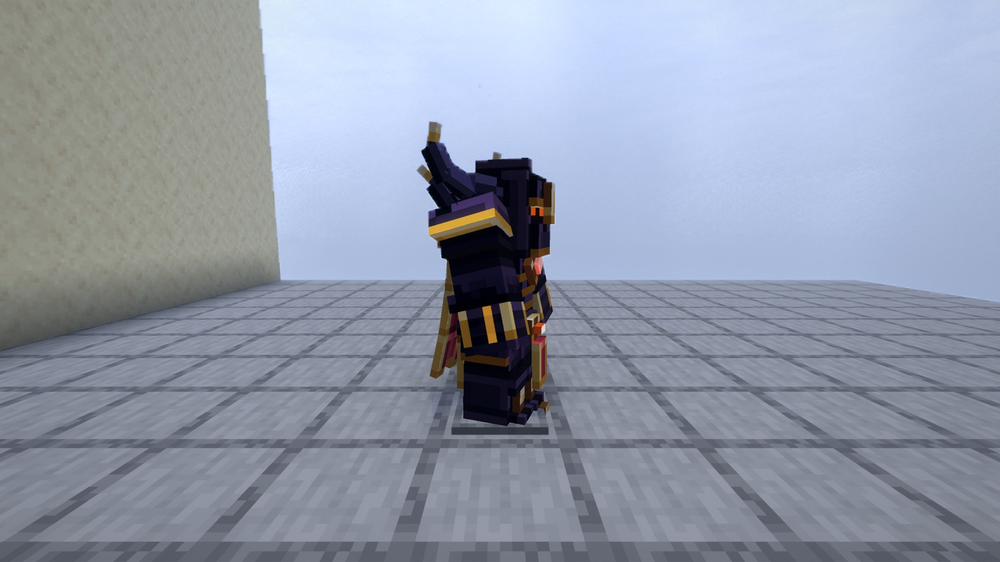
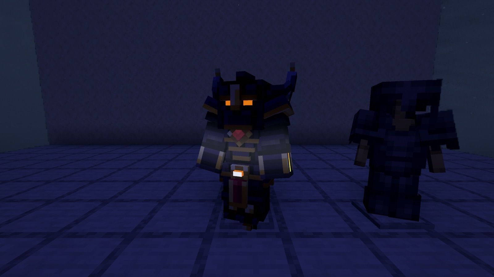
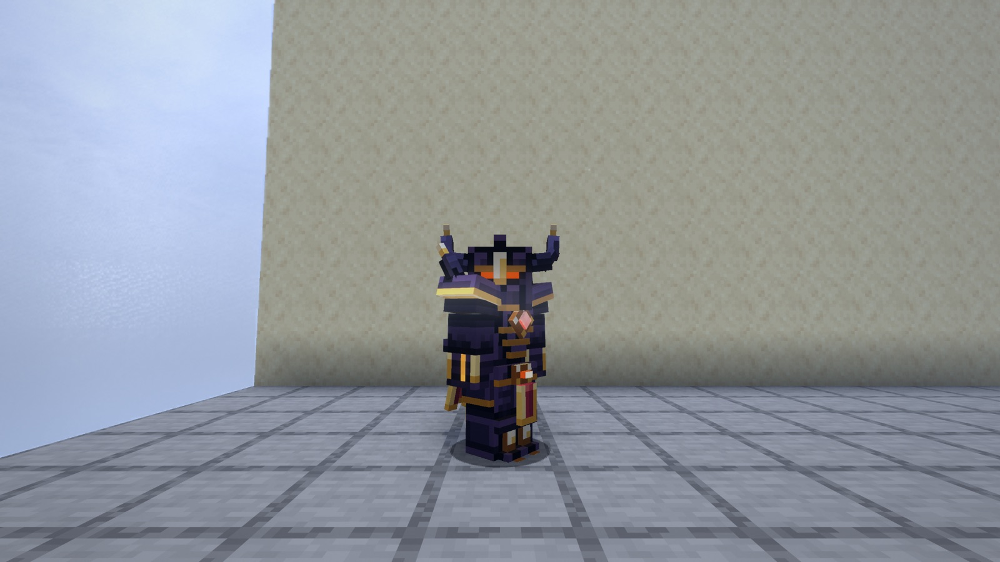
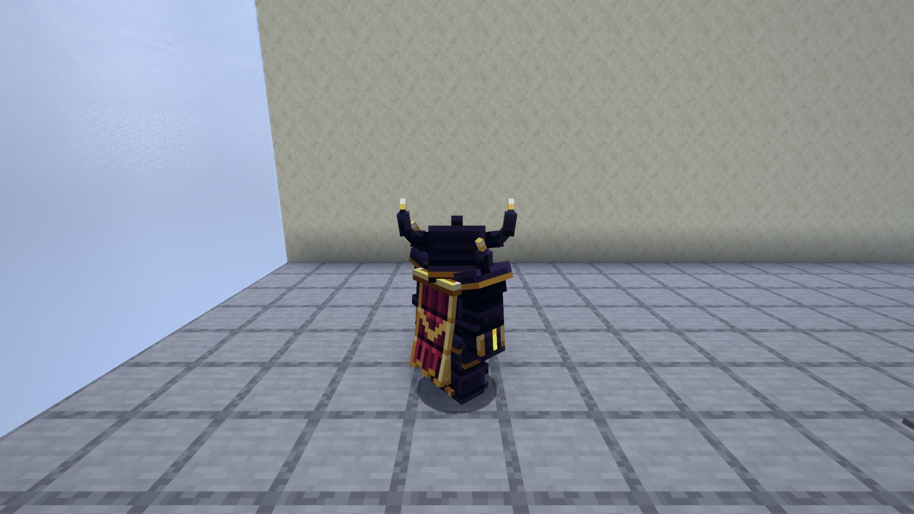
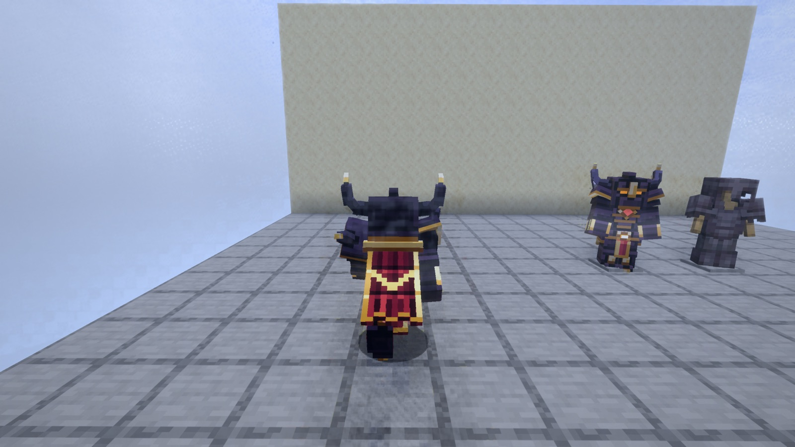
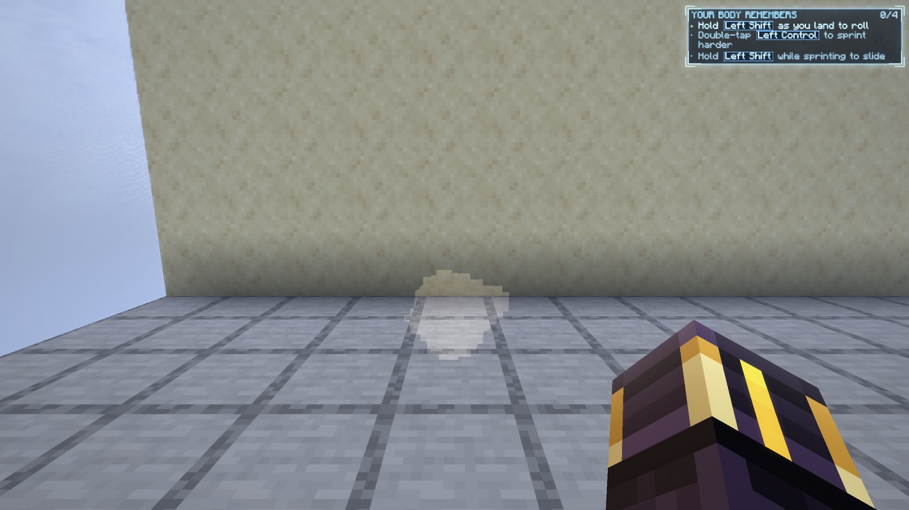
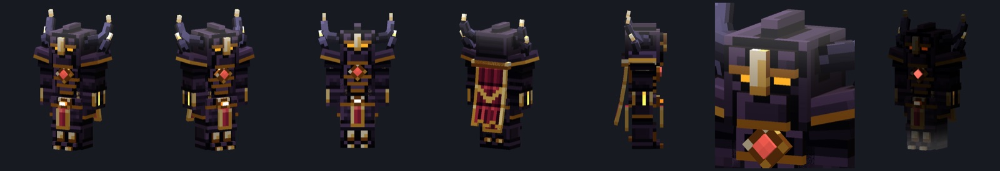

Armour you forge yourself at your Forge, in 29 sets across the ranks, each with its own shape, its own way to fight and a look that wakes as you master it. Below is the first set, Lordscale, already drawn in the real game.

armour-probe."It should make really awesome armor... Looking really cool is the biggest one: really epic, not the boring flat vanilla look."
The weapons had the same problem and were fixed by sculpted meshes and their own shader. The armour gets that path, with its own kit.
One hero set, Lordscale (the A set), made in the new armour kit and drawn in the real game: on a stand beside vanilla netherite, from behind, from the side, by night, worn by a player, walking, and the gauntlet in first person. 1,024 triangles for the whole set. No mixin; nothing about the renderer changed.









It took four rounds in the game to get here. The first drew nothing but a flat hat, because the game only hands its own kind of armour to the body; that's fixed. The second worked but looked squat and toy-like next to netherite: the helm was twice the size of the head, the shoulders drooped and gold rings lined up across the waist. So the helm now sits close to the head and gets its height from the horns, the shoulders rise, and the gold is kept for edges that lead the eye. The last round gave the forearm, the part you see most, its gold corners and molten line.
Every rank has one set for each way to fight, plus, from D up, one set forged from a gate Lord's heart. Today's six sets keep their names and items and become one set each in their rank, re-made in the new look.
| Way to fight | You wear it to | Its power (full set) |
|---|---|---|
| Bulwark | stand your ground | Blows you guard fill Bastion. Full, your next deflect or heavy bursts a shockwave around you. |
| Strider | move: dodge, run walls, dash | Perfect dodges fill Flow. Full, a dodge leaves an afterimage that takes the next blow, and the next dodge is a long rush. |
| Channeler | fight with your powers | Each cast leaves a rune circling you. With three, your next power hits harder and wider. |
| Duelist | fight with the blade | Deflects and rhythm fill Edge. Full, your next strike sends a cutting wave. |
| Lord-forged | wear a Lord's power | The Lord's own move, made from its heart. |
| Set | Way | What it looks like | Colours |
|---|
The rule: armour may change your body, your blows and your movement, and what everyone in front of you can see. It never shows you anything hidden. No outlines, no glowing creatures, no ores through stone.
From D up you make armour at your Forge. The Emberkits keep the fire hot and work the bellows; the hammer is yours. At E, before the Forge, you make it by hand at the works table.
| Rank | Hours | Metal | Also |
|---|---|---|---|
| E | 0-4 | copper | hide, bone, resin and wood from the wilds; made by hand |
| D | 4-17 | iron, from the caves | the Forge opens; gate patterns; a D Lord's heart for Hornlord |
| C | 17-45 | diamond | frost pelts, crystals to inlay; Shardcrown |
| B | 45-70 | amethyst and Deepglass | Veil thread, Living Deep carapace; Hollowheart |
| A | 70-88 | netherite | sky feathers; Lords' scales for Lordscale |
| S | 88-100 | starmetal | the Hollow Court for Sovereign Weave |
Hours from the approved Journey. The Provings' gifts stay exactly as approved. Every item says what it is, what it's for and where to get more.
Today's six sets keep their items, so every piece in a chest or on you stays itself and simply gains its new look and its temper. Wildhide's Hunter's Sense becomes Pounce. Vanilla armour stays as vanilla made it.
The probe made real on all six of today's sets, on you, on stands, on mobs, at a distance; the gauntlet in every first-person pose; Hunter's Sense becomes Pounce.
You see: your current sets transformed. About a day.
Heat, shape, quench, fit; the Fitting Stand; the camera and sounds; quality; the Armoury lists armour; the works table for E. Today's recipes move to the Forge.
You see: forging Beastbound at your Forge.
Seven new sets, the four powers, mastery I to III.
You see: four or five sets to choose from in the first 17 hours.
Eight sets, inlay and tuning, mastery IV and V (sets grow and get auras), Looks and accents.
You see: the middle game's sets and the first auras.
Eight sets, folding and starfire, the Lord-forged sets with the bosses' Lords.
You see: the end game's sets.
A Hall of Arms in the Hearth, a frame-time pass on your Mac, far detail, pacing, sound.
You see: the finished ladder.
Tap Yes or No on each. Your answers save as you tap and I read them from here. Add a note to change anything.
docs/armour/PLAN.md on the branch claude/armour-forge-plan-c98ed9. The probe's code is on that branch too; it is there to show the look, not to merge.
All art is ours, made by the kit in tools/art/specs/armour_sets.py. Your reference pictures set the bar only.
Nothing beyond the probe is built until you say yes.